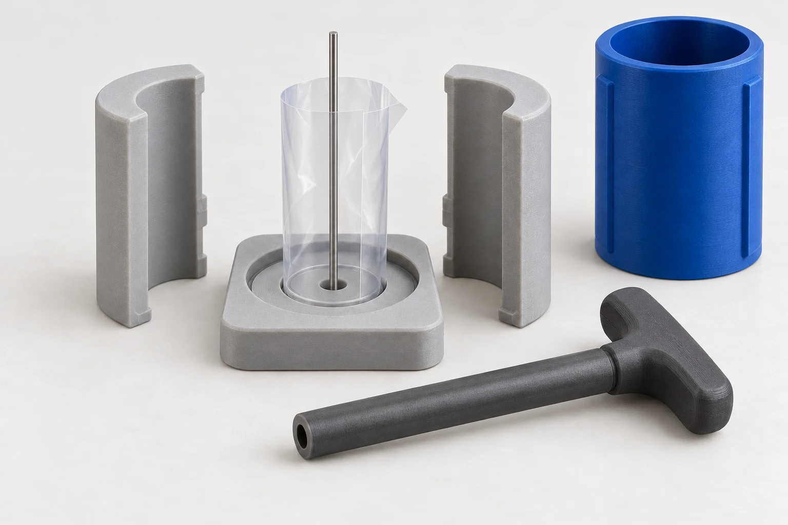
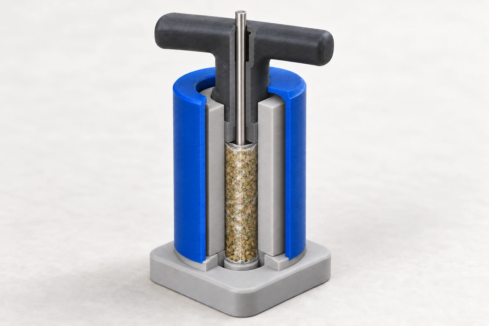
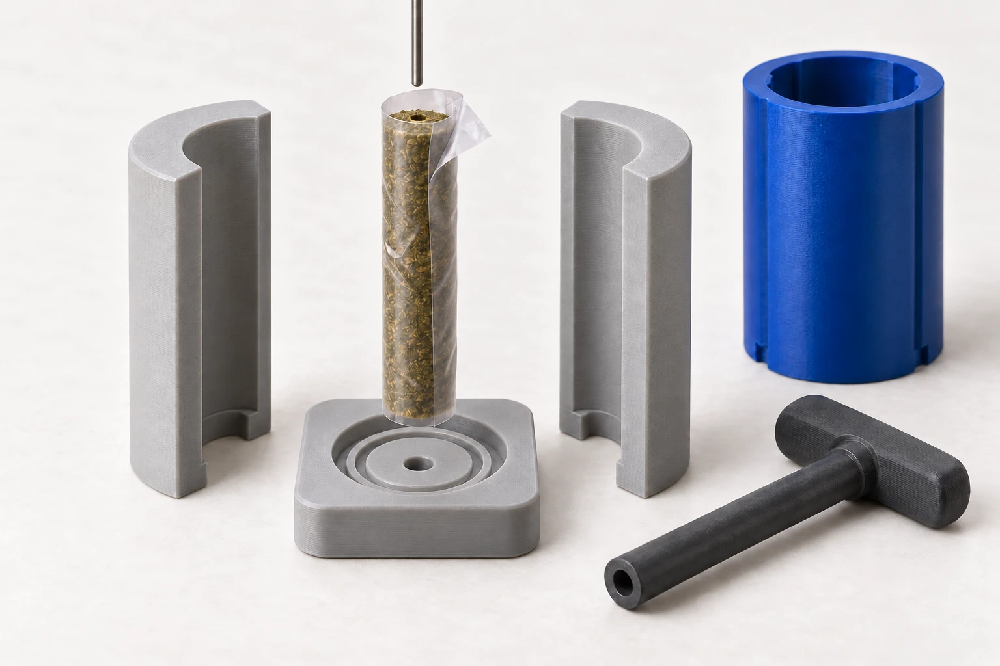

MOLDE INDIVIDUAL · CONCEPTO R3 · EJE CENTRAL
Se abre el molde.
El FEP se queda.
Un palito de Ø2 mm atraviesa el centro del producto. El émbolo, con orificio pasante de Ø2.2 mm, comprime alrededor de él. El FEP sale junto al cilindro.
Ver funcionamiento5 piezas impresas + palito + FEP · Producto objetivo Ø1 × 9 cm

Así se monta, comprime y abre.
El FEP es una lámina antiadherente fina y flexible: se enrolla, se apoya en su ranura y sale con el producto. El palito permanece en el centro durante la compresión.


El FEP entra en su ranura.
Se enrolla la lámina y se introduce su borde inferior en la ranura circular interior. El orificio del centro sostiene el palito de Ø2 mm. El asiento circular exterior recibe las dos mitades.
El borde solapado y la pestaña doblada muestran que es una lámina flexible.


El émbolo rodea el palito.
La camisa mantiene unidas las mitades. El émbolo comprime dentro del FEP y se desliza por el palito mediante su orificio pasante de Ø2.2 mm, continuo por el cuerpo y el mango.
Esta vista tiene un corte explicativo para mostrar el interior; el molde real tiene las paredes cerradas.


Sale envuelto en el mismo FEP.
Se retira el émbolo, se levanta la camisa y se liberan las mitades. Sujetando el cilindro envuelto, se retira el palito hacia arriba. Después se levanta el cilindro: el borde del FEP sale de la ranura con él.
El producto conserva el canal central y su envoltura.
Mockups conceptuales generados para explicar el funcionamiento. Las proporciones y los pliegues del FEP son ilustrativos; los ajustes se comprobarán con el material real. Objetivo: cilindro Ø10 × 90 mm, palito Ø2 mm y paso del émbolo Ø2.2 mm.
Una pieza a la vez.
Reproduce la secuencia completa o avanza a tu ritmo. La sección lateral permite ver lo que queda oculto por las paredes.
Tres alojamientos. Tres funciones.
El alojamiento central sostiene el palito. La ranura anular recibe el FEP. El asiento exterior recibe las dos mitades.
El palito tiene su alojamiento
El fondo soporta el producto alrededor del eje. La base incluye un alojamiento central para el palito de Ø2 mm, independiente de la ranura del FEP.
La camisa es el cierre
Primero se retira hacia arriba. Después se levantan ligeramente las mitades y se separan hacia los lados.
El FEP sale con el cilindro
La lámina protege los lados. El rollito tiene el fondo abierto; esta propuesta no añade un disco inferior.
El kit, sin piezas escondidas.
- 01Base con alojamiento centralPalito, ranura FEP y asiento de mitades
- 02Mitad APrimera pared del molde
- 03Mitad BCompleta el cilindro
- 04Camisa de cierreMantiene las mitades unidas
- 05Émbolo huecoOrificio Ø2.2 mm pasante por cuerpo y mango
El palito de Ø2.0 mm y la lámina FEP son dos elementos adicionales. El palito se retira axialmente para dejar el canal central; el FEP permanece alrededor del producto.